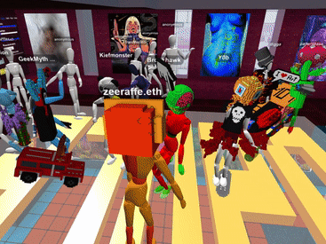

Monograph / 1996-2026
Serena
Stelitano
Image, System, Place
Drawing, programmable art, virtual environments, immersive journalism and games.
01
1996-2018
Drawing Before the Interface
Before spatial media, programmable layers and game systems, Stelitano worked through drawing: editorial illustration, literary adaptation, comics, cultural heritage, natural-history subjects and educational publishing.
Serena Stelitano's practice begins with an education in drawing, composition, restoration and cataloguing at the Liceo Artistico Maffeo Olivieri. The curriculum also included law and economics. These disciplines recur later through questions of authorship, classification, circulation, ownership, evidence and public access.
Her early professional work moved between editorial illustration, comics, cultural interpretation and design. The Pitoti / PITOON work around Valle Camonica translated rock engravings into contemporary narrative forms. The Black Cat developed Poe through sequential imagery and atmosphere. Social and political illustrations compressed current events into single images, while the sports work for Visto dal basso required caricature, timing and the quick legibility of editorial drawing.

The 2016 portrait of Andrea Camilleri acquired an unusually long editorial life. Published under an open licence, it circulated through newspapers, cultural publications, periodicals and reference contexts in several countries. The drawing condenses Camilleri's recognisable features into a scene with its own small narrative: cassatina, terrace, sea, cigarette, pause.
Ucki: Diary of a Stone-age Boy placed illustration inside an educational system. Character design and archaeological reconstruction were joined by the Pleistocene Fauna Memory Game / Kartenspiel Tiere Kiste, developed as a digital printable memory game and physical card format. Image, classification and play were already connected through use.
02
2015-2020
Drawing With Others
DADA introduced a social structure in which drawing could operate as reply, sequence and shared construction.
Stelitano joined DADA's visual-conversation culture before blockchain art developed its later market conventions. A drawing on DADA could answer another drawing, redirect a sequence or become the condition for somebody else's response. The image retained an author while belonging to a larger conversational structure.
Her participation extended through visual conversations, live drawing, early cryptoart, charity initiatives and collective experiments. Creeps & Weirdos brought drawings from this context into one of DADA's early blockchain collections, establishing digital scarcity, provenance and royalties inside an existing artistic community.


Soul in the Machine and DADAGAN extended collaborative drawing into a hybrid setting involving human drawing, generative processes, live participation and physical/digital presentation. The work belongs to an early period in which AI-adjacent image systems were being explored through collective practice rather than as isolated production tools.
The habits developed through DADA persist in later projects: attribution remains visible, contributions are structurally interdependent, and an authored element can retain its identity inside a system assembled by several people.
03
2019-2022
Programmable Images, Physical Consequences
TXU.TOTEM, Oracle and Andrea Grows placed authorship inside rules, layers, ownership and movement between digital and physical formats.
TXU.TOTEM was produced by a five-person collective on Async Art. Its master and layer structure allowed the visible work to change through different contributor states. Stelitano's four recorded states — SNK, HEN, FRL and SOL — operated inside a composition that remained variable.
Oracle, programmable fortune-teller developed the same interest in distributed control through a work designed around seven leaves of the Sibyl. Layer owners could select positive or negative states; their combination generated the current reading. Apollo introduced an autonomous layer. Artist, collectors, automation and the person consulting the work occupied different positions within the same system.
Oracle also existed through a dedicated frontend, written explanations, derivatives and a printable version. The digital work generated routes toward paper and physical handling, continuing a pattern already present in the printable memory game made for Ucki.
Andrea Grows expanded these relationships through an interactive webcomic, branching choices, DADA sketchbook, NFT publishing on NEAR / Mintbase, QR flows and a physical Collector Box. Publishing became a sequence of encounters across screen, token, printed object and delivery.
Across these projects, agency is distributed among artist, collector, system and participant. The visible object changes according to who is allowed to act.
04
2020-2023
Building Places for Art
Virtual architecture turned exhibition design into movement, encounter and public use.

Stelitano's first Voxels exhibitions were conceived as places with routes, rooms, hidden elements and social uses. PYF – Presente y Futuro of the Human Civilization brought Global South artists into a virtual exhibition built and curated in 2020. Solo presentations, collaborative venues and The Pagans and their Rites followed.
Opening events made the architecture legible through occupation. Avatars moved, gathered, danced and encountered works at different scales. The exhibition existed through the relationship between build, artwork and visitors.


Hybrid festival commissions widened the scale. For Rare Effect Vol. 1, Stelitano modelled the virtual gallery connected to Arroz Estúdios in Lisbon. Wildeverse linked a physical German festival to metaverse environments and NFT programming. The projects joined venue building, curation, streaming, openings and live audiences.
05
2021-2023
When Reporting Becomes a Place
With CCIJ, spatial design became a way of organising investigative material: photographs, data, testimony, geography and sequence.
Stelitano began working with the Center for Collaborative Investigative Journalism in 2021. Her documented workflow developed alongside the reporting itself: follow an investigation from the beginning, research location and background, adapt visual materials, maintain adherence to data, produce early test-builds, refine them through editorial and technical feedback, test them on real devices and preserve previous versions as digital historical objects.

In An Encroaching Desert Intensifies Nigeria's Farmer-Herder Crisis, photography, text, spatial obstacles and a voxelised environment created an encounter with the geography of the reportage. The space established relationships among desertification, displacement, land and conflict through movement.
Rivers of Sewage developed a more extensive sequence of rooms: an introduction, reconstructed environments and data-led spaces. A reader became a visitor moving between forms of evidence.


Living in a “critical state” and Not the Kind of Life a Human Being Should Live continue the approach through reconstructed places, photo surfaces, portals, environmental scale and guided movement. Fueling War and the Russian oil investigation use the same family of spatial tools for another geopolitical subject.


06
2022-2024
Walking and Wearing Data
Several CCIJ environments treated datasets as spatial material: something visitors could approach, traverse, compare and eventually wear.


Walk the Data: Wastewater Treatment Works Compliance in Free State turned compliance data into a walkable environment. The Direct Potable Reuse work connected an immersive room outward to Google Earth, allowing geographic reference to remain accessible from inside the virtual build.
Dreadlocks and Discrimination moved data onto the body. Categories describing lived experiences of discrimination were translated into three-dimensional wearables and made available in Voxels. A variable that might ordinarily appear as a bar or label acquired dimensions, colour, position and an embodied relationship to the visitor.
Public sessions around the project used the environment as a meeting place as well as a visualisation. Data, avatar and discussion occupied the same room.
07
2023-2025
Three Degrees of Participation
Democracy Deferred, Shield Your Vote and the Fortnite work were developed as successive levels of interaction across open world, AR and game systems.
The Democracy Deferred XR layer formalised three distinct kinds of encounter. The Voxels environment distributed photographs, articles, voxelised magazines, video, audio and reconstructed obstacles through an open virtual world. Visitors explored the reporting spatially and could follow publication links back to VEZA.
Shield Your Vote added place-and-play interaction through Zappar. Polling-place objects — table, ballot containers and poll elements — could be positioned in the player's own surroundings. The lid of a ballot container became a shield against malfeasance smoke and attacks represented by social-media posts.
The third level moved the investigative premise into Fortnite. Players took the role of investigative journalists recovering Data Fragments through a toxic fog, with the recovered material destined for the Data Vault Canyon.
Explore. Place. Shield. Recover.
Each platform adds a different verb to the same investigative continuum.
08
2025-2026
The Investigation Becomes a Game
The Data Vault Canyon translates investigative processes into level structure, data recovery, roles, hazards and a final decision.

The project grew from Shield Your Vote and the wider Democracy Deferred investigation. Fortnite UEFN required the political material to be abstracted into fictional, platform-compliant forms. The abstraction produced a vocabulary of broken archives, toxic fog, data fragments, bots, newsroom roles and damaged public signals.
The design dossier assigns distinct investigative functions to Editor, On-Site Journalist, AI-Chatbot and Data Scientist roles. Testimony, verification, data checking and information defence become different forms of player action. Collaboration is encoded in progression: key mechanics require more than one role.
Malfeasance fog persists through the imagined level structure as a visual expression of engineered confusion and manipulation. Data Fragments make information recoverable, vulnerable and valuable through the time spent finding it.

The current Data Vault level ends with two choices: RELEASE THE DATA and SEAL THE DATA. The question follows a level spent gathering and protecting the fragments. The player reaches the decision with a practical relationship to the information already established through play.
The Bots Ridge extends the game toward coordinated misinformation, bot multipliers and more systemic combat and defence. The newsroom and canyon become the base for a larger sequence of levels.
09
2019-2026
Parallel Ground
Regenerative farming, environmental writing and climate data run alongside the digital practice and increasingly enter its subjects and methods.
Since 2019 Stelitano has worked as a regenerative farmer and manager in Tuscany alongside her work in digital media. The two professional lines meet most directly around land, ecological systems and environmental data.
Her 2025 and 2026 writing addresses forest loss, the ecological consequences of historical land transformation, zoonotic risk, Mercosur and regenerative alternatives. Her LinkedIn profile places regenerative agriculture beside XR, immersive storytelling, climate data visualization and investigative journalism among her current principal skills.
The environmental XR work develops these relationships technically. Forest Is Life – But Nigeria's Last Rainforest Is Falling Fast integrates land-surface-temperature analysis derived from Landsat 8 and 9 dry-season data for 2016 and 2025. Continuous temperature-difference maps were integrated into the editorial XR layer. Puddle Placer AR translated thermal difference into placeable mobile objects, with cooler forest zones and hotter degraded areas represented through different visual and sonic behaviour.
The combination of agricultural management, environmental analysis and immersive production gives this recent work an additional register. Land is encountered as managed territory, measured system, contested history and spatial dataset.
Chronology
Selected 1996-2026
- 1996-2001
- Artistic education: drawing, composition, restoration, cataloguing, law and economics.
- 2012-2013
- Pitoti / PITOON / Valle Camonica.
- 2014
- bottega di Serste begins; Carugate e il Parco degli Aironi.
- 2015-2023
- DADA visual conversations and collaborative practice.
- 2016
- Andrea Camilleri, cassatina sulla terrazza a Marinella; editorial and sports illustration.
- 2016-2019
- Ucki: Diary of a Stone-age Boy and Pleistocene Fauna Memory Game.
- 2017
- Creeps & Weirdos.
- 2018-2019
- The Way Home, multimedia / AR migration project.
- 2019
- Soul in the Machine / DADAGAN; regenerative farming begins.
- 2020
- PYF, Simon Wairiuko solo curation, TXU.TOTEM, Oracle, The Pagans and their Rites.
- 2021
- CCIJ collaboration begins; NFT(Kitties)LAB, Riva Taylor NFT Space, Rare Effect, Wildeverse.
- 2021-2022
- Andrea Grows: interactive webcomic, NEAR/Mintbase publishing and Collector Box.
- 2022
- An Encroaching Desert Intensifies Nigeria's Farmer-Herder Crisis; Rivers of Sewage; Spatial investigative rooms.
- 2023
- Dreadlocks and Discrimination; CCIJ Hub; PL Sessions; immersive data rooms.
- 2023-2025
- Shield Your Vote.
- 2025
- Forest Is Life / Puddle Placer AR; The Data Vault Canyon; Truth & Dare.
- 2025-2026
- The Bots Ridge.
- 2026
- Environmental and analytical writing; ICE Paperdoll DataViz; current XR and regenerative practice.
Provenance
Circulation, contracts and public space
Stelitano's digital practice includes on-chain, spatial and open-license records extending across several technical generations. Her canonical Ethereum identity is serste.eth, associated with 0x20dA165deB81dBB042fE4A9d4808399eF2477c5d. DADA Collectible records include a confirmed 5.2402 ETH direct art-related contract payout to that wallet in March 2021. Historical Async, MakersPlace and KnownOrigin records document additional activity whose complete sale ledgers require token-level reconstruction.
TXU.TOTEM survives as Async Art Master Token #108 and through project documentation identifying Serste among the five contributors. Oracle's programmable structure, derivatives and collector-facing components survive across written and marketplace records.
Virtual environments also preserve public-use traces. Current Voxels collaborator parcels and Spatial spaces carry dated platform visit or view counters. These figures describe platform traffic rather than unique people and are best read as historical platform metrics.
The Camilleri portrait offers a different form of circulation. Its CC BY-SA release enabled repeated editorial reuse from 2016 onward. A 2026 review has documented at least nine independently accessible external editorial or periodical contexts, alongside four Wikiquote uses. The list is a minimum documented circulation rather than a complete historical count.
Selected sources
Public references
- LinkedIn — Serena Stelitano, professional profile, experience, education, certifications and projects.
- CCIJ / VEZA — investigative series, immersive project credits and XR publications.
- DADA / PowerDADA — visual conversations, Creeps & Weirdos and smart-contract history.
- Async Art — TXU.TOTEM and Oracle programmable-art records.
- NEAR Forum / Mintbase — Andrea Grows, Createbase builds and hybrid publishing records.
- Voxels / Spatial — virtual-world spaces and dated platform records.
- Wikimedia Commons — Andrea Camilleri, cassatina sulla terrazza a Marinella, 2016.
- CCIJ project documentation — immersive-journalism workflow, three-level XR model and Data Vault Canyon design research.
Serena Stelitano — Image, System, Place
Monograph edition, 2026.
Serena Stelitano / Serste / SeLoPhlee · bottega di Serste.
Typography: Roboto Mono, regular / bold / italic / bold italic.